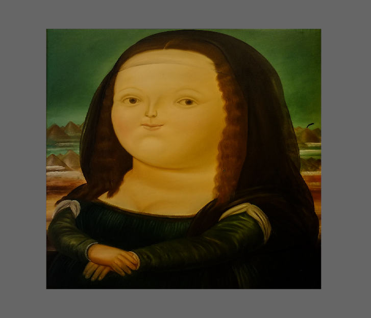

Half Tone Shader - Part 2
Setting up an environment for WGSL
Since we are pretty darn cool and we want to learn something new and fancy, we are obviously going to write our shader in WGSL as spoilered in the last part. But beeing cool comes at a price. We can't just use some easy tool like the ShaderToy to develop the shader since it doesn't support WGSL (or at least I'm not aware of it). This means, we need some other home cooked environment in which we can try out our shaders. Unfortunately, this is not done in a minute either.
Since we are lazy, we try to take some shortcuts at least. Instead of setting up a whole WGPU project, we are just going to use a game engine called Bevy, which abstracts at least some of the boilerplate away. Of course this has some tradeoffs in terms of low level control, but we just want to have a sandbox where we can test some shader programs. In our case the "sandbox" will be a boring plane in 2D space. This is going to be our empty wall, on which we will draw beautiful pieces of art. But I digress ... Let's finally start
Setting up the Bevy boilerplate
First of all, we are going to create an empty project
cargo new wgsl-tutorial
After that we will include some recent version of bevy in the Cargo.toml file. Attention! Deviate from the versions used in this tutorial at your own risk!
# ...
# blah
# ...
[dependencies]
bevy = 0.7
After that ... it's coding time 😎. Open your main.rs and plug in that sweet and juicy bevy boilerplate code:
use std::time::Duration;
use bevy::prelude::*;
use bevy::window::PresentMode;
use bevy::winit::{UpdateMode, WinitSettings};
const RESOLUTION: f32 = 16.0 / 9.0;
const HEIGHT: f32 = 900.0;
fn main() {
App::new()
.insert_resource(WindowDescriptor {
title: "BEVY SHADER TEST".to_string(),
width: HEIGHT * RESOLUTION,
height: HEIGHT,
present_mode: PresentMode::Mailbox,
..default()
})
.insert_resource(WinitSettings {
focused_mode: UpdateMode::ReactiveLowPower {
max_wait: Duration::from_millis(50),
},
unfocused_mode: UpdateMode::ReactiveLowPower {
max_wait: Duration::from_millis(50),
},
..default()
})
.add_plugins(DefaultPlugins)
.add_startup_system_to_stage(StartupStage::PreStartup, setup)
.run();
}
fn setup(mut commands: Commands) {
commands.spawn_bundle(OrthographicCameraBundle::new_2d());
}
This will basically just set up an empty window with a grey background like this one over here.
There are also some nice extras for you in there 🍬🍬🍬
We used a pretty new feature of bevy, the Power Saving Modes.
// ...
.insert_resource(WinitSettings {
focused_mode: UpdateMode::ReactiveLowPower {
max_wait: Duration::from_millis(50),
},
unfocused_mode: UpdateMode::ReactiveLowPower {
max_wait: Duration::from_millis(50),
},
..default()
})
// ...
Basically the screen is rendered less frequently with these settings so that your computer won't go boom 🔥 when there is nothing changing on the screen but you still want occasional screen updates. You don't need to use the Power Saving Modes, but it's a neet feature I just wanted to highlight here. After all that has been done, we can start integrating some shader code.
The following code was heavily inspired by some well structured videos on youtube from my guy Logic Projects. In particulat I'm talking about these two videos of his:
This is going to be a bit lengthy, but when we made it through, we don't need to touch the code that follows ever again and we can stay in shader-land as long as we want.
Setting up a material for rendering
Basically, what we want is just a rendered rectangle on which we can apply our shader. The shader will be encapsulated in something called a "material". To define our very own material for our own shader, we start by creating a new and empty struct for it. Since we will paint with our shaders on it, let's give it a funny name:
struct MonaLisaMaterial;
We also need to derive some traits for it:
#[derive(Debug, Clone, TypeUuid)] // <- new
#[uuid = "a28d417a-d9c4-11ec-9d64-0242ac120002"] // <- new
struct MonaLisaMaterial;
The TypeUuid trait here is something that comes from bevy and is needed implicitly by another trait we will implement soon.
Since we want to display a picture of the Mona Lisa on the rectangle, we need to store some information for some picture in that struct as well, so let's quickly add it.
#[derive(Debug, Clone, TypeUuid)]
#[uuid = "a28d417a-d9c4-11ec-9d64-0242ac120002"]
struct MonaLisaMaterial{
image: Handle<Image>, // <- new
}
To make data from our CPU world available in the GPU world, we will additionally have to define a second struct which will represent our data on the GPU:
struct GPUMonaLisaMaterial {
bind_group: BindGroup
}
It contains a BindGroup, which is essentially responsible for mapping the CPU data to the GPU data.
Finally, we define a new resource, which will hold the image, on which we will apply our Half-Tone-Shader.
#[derive(Deref)]
struct TheMonaLisaHerself(Handle<Image>);
Oops, we should probably also load her in the setup step of our bevy app, so let's quickly add that:
// | new
// v
fn setup(mut commands: Commands, assets: Res<AssetServer>) {
commands.spawn_bundle(OrthographicCameraBundle::new_2d());
commands.insert_resource(TheMonaLisaHerself(assets.load("mona_lisa.png"))); // <- new
}
Now, that the definition of all of those structs is out of the way, we can begin to implement some funny traits (spoiler: not really funny) for our MonaLisaMaterial. The traits we're going to implement are RenderAsset and Material2d. Let's start first with RenderAsset because there we can find some juicy 🍸 associated types.
impl RenderAsset for MonaLisaMaterial {
type ExtractedAsset = ...
type PreparedAsset = ...
type Param = ...
... other stuff ...
}
Let's take a short look at this. The type ExtractedAsset is the type of data we want to extract from our CPU-World. This is exactly the MonaLisaMaterial including the image handle for the Mona Lisa.
impl RenderAsset for MonaLisaMaterial {
type ExtractedAsset = MonaLisaMaterial; // <- new
type PreparedAsset = ...
type Param = ...
... other stuff ...
}
The PreparedAsset is the stuff that gets send to the GPU. We already defined a type for this, it's our beloved GPUMonaLisaMaterial.
impl RenderAsset for MonaLisaMaterial {
type ExtractedAsset = MonaLisaMaterial;
type PreparedAsset = GPUMonaLisaMaterial; // <- new
type Param = ...
... other stuff ...
}
The Param type defines other parameters which we're going to need in the functions of the RenderAsset trait. They may seem a bit arbitrary, but each one fulfills a important tast.
impl RenderAsset for MonaLisaMaterial {
type ExtractedAsset = MonaLisaMaterial;
type PreparedAsset = GPUMonaLisaMaterial;
type Param = (
SRes<RenderDevice>,
SRes<Material2dPipeline<MonaLisaMaterial>>,
SRes<RenderAssets<Image>>
);
... other stuff ...
}
Here is a short list to explain those parts shortly:
SResis basically just aReswithstaticlifetime- The
RenderDeviceis used as a connecting part between CPU and GPU world to create the bindings - The
Material2dPipelineholds information about the layout of the data and the image textures - The
RenderAssets<Image>basically just give us access to all loaded image handles
Pheww, now that this is out of our way, we can continue our journey through render-land 🗻. There are two functions on that trait which we need to implement. They are called extract_asset and prepare_asset. Let's implement extract_asset first because it's pretty simple.
impl RenderAsset for MonaLisaMaterial {
type ExtractedAsset = MonaLisaMaterial;
type PreparedAsset = GPUMonaLisaMaterial;
type Param = (
SRes<RenderDevice>,
SRes<Material2dPipeline<MonaLisaMaterial>>,
SRes<RenderAssets<Image>>
);
fn extract_asset(&self) -> Self::ExtractedAsset { // <- new
self.clone() // <- new
} // <- new
}
The idea behind extract_asset is basically to suck all the desired information out of CPU-World and collect it in one central place. After that's done guess what follows? ... Yes, you're completly right: prepare_asset
impl RenderAsset for MonaLisaMaterial {
type ExtractedAsset = MonaLisaMaterial;
type PreparedAsset = GPUMonaLisaMaterial;
type Param = (
SRes<RenderDevice>,
SRes<Material2dPipeline<MonaLisaMaterial>>,
SRes<RenderAssets<Image>>
);
fn extract_asset(&self) -> Self::ExtractedAsset {
self.clone()
}
fn prepare_asset( // |<- new
extracted_asset: Self::ExtractedAsset, // |
(render_device, pipeline, images): &mut SystemParamItem<Self::Param>, // |
) -> Result<Self::PreparedAsset, PrepareAssetError<Self::ExtractedAsset>> { // |
let (view, sampler) = pipeline // |
.mesh2d_pipeline // |
.get_image_texture(images, &Some(extracted_asset.image.clone())) // |
.ok_or(PrepareAssetError::RetryNextUpdate(extracted_asset))?; // |
// |
let bind_group = render_device.create_bind_group(&BindGroupDescriptor { // |
label: None, // |
layout: &pipeline.material2d_layout, // |
entries: &[ // |
BindGroupEntry { // |
binding: 0, // |
resource: BindingResource::TextureView(view), // |
}, // |
BindGroupEntry { // |
binding: 1, // |
resource: BindingResource::Sampler(sampler), // |
}, // |
], // |
}); // |
Ok(GPUMonaLisaMaterial { bind_group }) // |
} // |<- new
}
Ooooof, now that is a big chunk of code. Let's process it slowly:
The first part
// ...
let (view, sampler) = pipeline
.mesh2d_pipeline
.get_image_texture(images, &Some(extracted_asset.image.clone()))
.ok_or(PrepareAssetError::RetryNextUpdate(extracted_asset))?;
// ...
basically just tries to fetch the image data, which is comprised of a view and a sampler. Since the image has a certain loading time on startup, this part can fail and we return an error indicating the failure in that case. The error basically tells the app to just try to execute the prepare_asset function at a later point in time again. The next part then
// ...
let bind_group = render_device.create_bind_group(&BindGroupDescriptor {
label: None,
layout: &pipeline.material2d_layout,
entries: &[
BindGroupEntry {
binding: 0,
resource: BindingResource::TextureView(view),
},
BindGroupEntry {
binding: 1,
resource: BindingResource::Sampler(sampler),
},
],
});
Ok(GPUMonaLisaMaterial { bind_group })
is concerned with the creation of the BindGroup which we will store and return then in the GPUMonaLisaMaterial. Here we basically bring the data in the right format before the prepare_asset function poops it out into the GPU.
And that's it for RenderAssets basically. What a ride... and we still have Material2d left in front of use. But stay with me, it pays off. So let's go baby, Material2d here we come:
The Material2d trait contains three functions we're intrested in and they are not too complex.
impl Material2d for MonaLisaMaterial {
fn bind_group(material: &<Self as RenderAsset>::PreparedAsset) -> &BindGroup {
&material.bind_group
}
}
The first function, bind_group, basically just returns a BindGroup which is used by the GPU. We are lucky, since we store that information in our GPUMonaLisaMaterial which is the same as <Self as RenderAsset>::PreparedAsset, so we can just return a reference to it's field. Let's continue:
impl Material2d for MonaLisaMaterial {
fn bind_group(material: &<Self as RenderAsset>::PreparedAsset) -> &BindGroup {
&material.bind_group
}
fn bind_group_layout( // |<- new
render_device: &RenderDevice, // |
) -> bevy::render::render_resource::BindGroupLayout { // |
render_device.create_bind_group_layout(&BindGroupLayoutDescriptor { // |
label: None, // |
entries: &[ // |
BindGroupLayoutEntry { // |
binding: 0, // |
visibility: ShaderStages::FRAGMENT, // |
ty: BindingType::Texture { // |
sample_type: TextureSampleType::Float { filterable: true }, // |
view_dimension: TextureViewDimension::D2, // |
multisampled: false, // |
}, // |
count: None, // |
}, // |
BindGroupLayoutEntry { // |
binding: 1, // |
visibility: ShaderStages::FRAGMENT, // |
ty: BindingType::Sampler(SamplerBindingType::Filtering), // |
count: None, // |
}, // |
], // |
}) // |
} // |<- new
}
The function bind_group_layout just creates the layout for the data in the bind group which we returned in the prepare_asset function. If you want to find out more about all the details of BindGroups I recommend the docs of bevy as well as the docs of wgpu. Let's implement the last function:
impl Material2d for MonaLisaMaterial {
fn bind_group(material: &<Self as RenderAsset>::PreparedAsset) -> &BindGroup {
&material.bind_group
}
fn bind_group_layout(
render_device: &RenderDevice,
) -> bevy::render::render_resource::BindGroupLayout {
render_device.create_bind_group_layout(&BindGroupLayoutDescriptor {
label: None,
entries: &[
BindGroupLayoutEntry {
binding: 0,
visibility: ShaderStages::FRAGMENT,
ty: BindingType::Texture {
sample_type: TextureSampleType::Float { filterable: true },
view_dimension: TextureViewDimension::D2,
multisampled: false,
},
count: None,
},
BindGroupLayoutEntry {
binding: 1,
visibility: ShaderStages::FRAGMENT,
ty: BindingType::Sampler(SamplerBindingType::Filtering),
count: None,
},
],
})
}
fn fragment_shader(asset_server: &AssetServer) -> Option<Handle<Shader>> { // |<- new
asset_server.watch_for_changes().unwrap(); // |
Some(asset_server.load("masterpiece_shader.wgsl")) // |
} // |<- new
}
This is where we finally load our (not yet existing) shader and use it for the MonaLisaMaterial. Note that we also enabled hot-reloading in the with the .watch_for_changes() part. And that's almost it. Now that we have the material, we just need to spawn an object and apply the material to it and we are done with this part of the tutorial.
fn spawn_quad(
mut commands: Commands,
mut mesh_assets: ResMut<Assets<Mesh>>,
mut my_material2d_assets: ResMut<Assets<MonaLisaMaterial>>,
image: Res<TheMonaLisaHerself>,
) {
commands.spawn_bundle(MaterialMesh2dBundle {
mesh: mesh_assets.add(Mesh::from(shape::Quad::default())).into(),
material: my_material2d_assets.add(MonaLisaMaterial { image: image.clone() }),
..default()
});
}
I chose to "just" spawn a rectangle ▯ but you can basically choose whatever you want here. The world is your oister! Now plug that into your bevy app together with the Material2dPlugin for our MonaLisaMaterial and you can almost run it.
fn main() {
App::new()
.insert_resource(WindowDescriptor {
title: "BEVY SHADER TEST".to_string(),
width: HEIGHT * RESOLUTION,
height: HEIGHT,
present_mode: PresentMode::Mailbox,
..default()
})
.insert_resource(WinitSettings {
focused_mode: UpdateMode::ReactiveLowPower {
max_wait: Duration::from_millis(50),
},
unfocused_mode: UpdateMode::ReactiveLowPower {
max_wait: Duration::from_millis(50),
},
..default()
})
.add_plugins(DefaultPlugins)
.add_plugin(Material2dPlugin::<MonaLisaMaterial>::default()) // <- new
.add_startup_system_to_stage(StartupStage::PreStartup, setup)
.add_startup_system(spawn_quad) // <- new
.run();
}
"Why almost?", you ask. Because we need to provide the mona_lisa.png and the masterpiece_shader.wgsl in the ./assets/ directory. You can obviously use whatever image you want to use and for the default shader, use this here:
struct VertexOutput { // |<- ignore this for now
[[builtin(position)]] clip_position: vec4<f32>; // |
[[location(0)]] world_position: vec4<f32>; // |
[[location(1)]] world_normal: vec3<f32>; // |
[[location(2)]] uv: vec2<f32>; // |
}; // |
// |
[[group(1), binding(0)]] // |
var texture: texture_2d<f32>; // |
[[group(1), binding(1)]] // |
var out_sampler: sampler; // |<- ignore this for now
[[stage(fragment)]]
fn fragment(input: VertexOutput) -> [[location(0)]] vec4<f32> {
let rgba : vec4<f32> = textureSample(texture, out_sampler, input.uv);
return rgba;
}
This basically just samples the image we load and displays it as is on the rectangle. You should now see something like this:

Well 😳, ... erm ... I guess see you in the next part